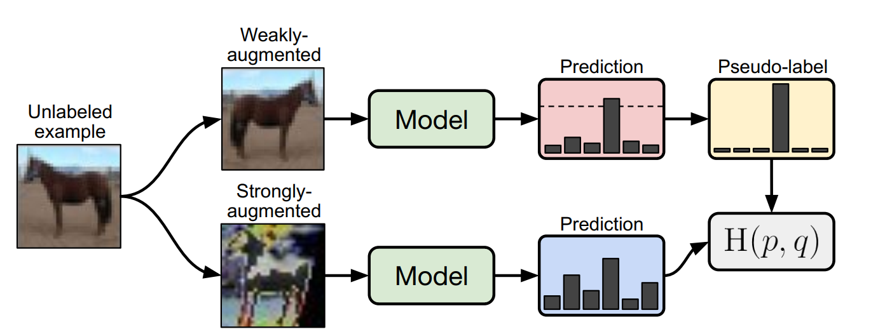
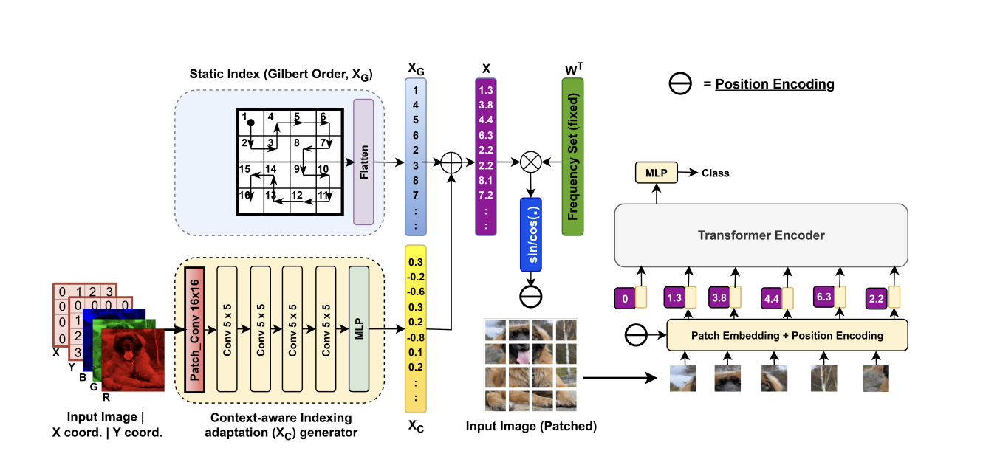

Hello! I am a M.Sc. student in Communication & Signal Processing at Bangladesh University of Engineering and Technology (BUET), currently maintaining a CGPA of 4.00/4.00. I also serve as a Lecturer in the Department of EEE at the University of Asia Pacific. My research interests broadly span Computer Vision, Applied Machine Learning / Deep Learning, Large Language Models, and Generative AI. I am currently investigating parameter-efficient methods for leveraging pretrained models under the supervision of Prof. Shaikh Anowarul Fattah at BUET. I also work as a remote research assistant in Dr. Fnu Suya's lab at the University of Tennessee, Knoxville.
I completed my B.Sc. in EEE from BUET with a CGPA of 3.85/4.00 and was awarded the undergraduate research grant. During my undergrad, I explored deep learning applications in healthcare, including brain MRI lesion segmentation using attention-gated fusion networks. I am passionate about bridging the gap between machine learning research and real-world applications.
Interests
- Computer vision
- Computational imaging
- Large language models
- Generative AI
- Reinforcement learning
Selected Publications

Diffractive Networks Learn Imagers, not Inverses
A. A. Taki, S. A. Fattah, M. Saquib
Under review at IEEE ICASSP 2027

ProxMatch: Feature Space Proximity for Calibrated Pseudo-Label Propagation in Semi-Supervised Learning
A. A. Taki, W. Aspen, F. Suya
Under review

LOOPE: Learnable Optimal Patch Order in Positional Embeddings for Vision Transformers
M. A. M. Chowdhury, M. R. U. Rahman, A. A. Taki
CVPR Findings, 2026

RBMatch: Dual-Level Class Rebalancing for Semi-Supervised Building Footprint Extraction
A. A. Taki, S. A. Fattah
Under review at IEEE Geoscience and Remote Sensing Letters (GRSL)

Low-Fidelity Synthetic MRI Degrades Rare-Class Classification in Diffusion-Based Augmentation
A. A. Taki, M. I. H. Bhuiyan
Under review at ICCIT 2026